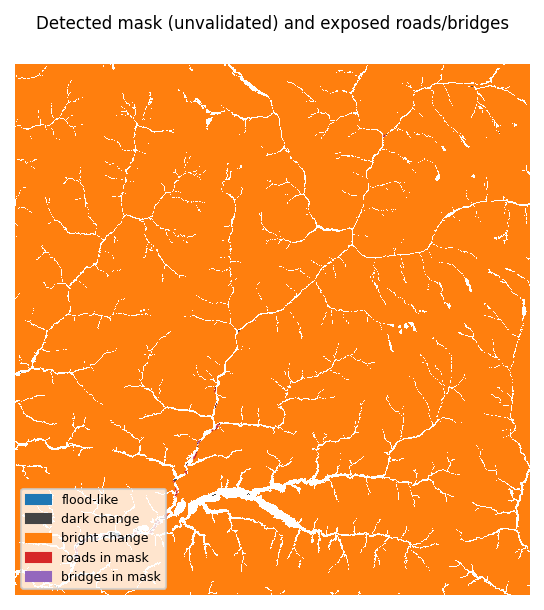

PRELIMINARY, 2026-10-11, commit
c81474a+ uncommitted changes (DRAFT)
Situation. Flash flood (suspected GLOF) on 2026-08-26, Trishuli / Bhote Koshi, Rasuwa, Nepal. Sentinel-1 track asc85, 2026-08-16 / 2026-08-28: detector status change_detected (calibrated=True). Surface change was detected on the valley floor; it is not attributed to flooding and not a validated flood extent. Counts below are exposure to that mask. Flood-like (new open water) change is separable from the no-flood nulls.
| Key number | Headline | Scenario range |
|---|---|---|
| Flagged area | 3.14 km² | 1.66–5.48 km² |
| Buildings overlapping the mask (unknown status: 92%) | 556 (6 flood-like, 550 other change) | 244–1,078 |
| Motorable road in mask | 11.8 km | 6.4–22.0 km |
| Bridges exposed (not failed) | 20 of 385 | 12–30 |
| Settlements cut off (no path to hospital) | 4 of 446 | 2–12 |
| Settlements degraded | 0 | 0–1 |
| Settlements with no pre-flood route (not assessed) | 141 | n/a |

Limitations
Contains modified Copernicus Sentinel data 2026. Produced using Copernicus WorldDEM-30 © DLR e.V. 2010–2014 and © Airbus Defence and Space GmbH 2014–2018 provided under COPERNICUS by the European Union and ESA; all rights reserved. © OpenStreetMap contributors. Educational prototype, not an operational tool.